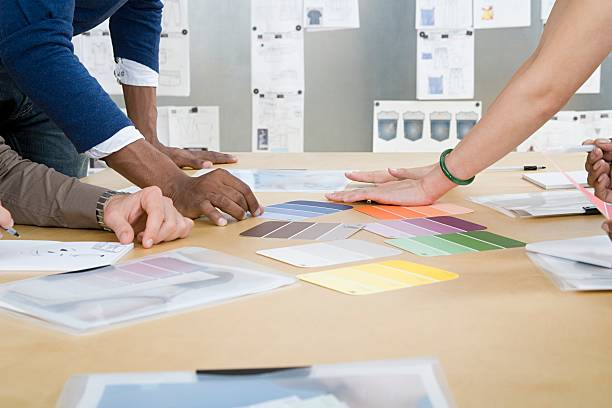
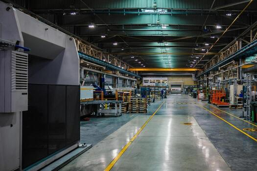

Our Materials
Our socks are made from organic cotton, recycled yarns and responsibly sourced wool.
We choose fibres that are soft on your feet and gentle on the planet. Every material is checked for quality and traceability before it reaches our knitting machines.
Our Production
We work with small, trusted factories that pay fair wages and run on renewable energy.
Our knitting process is designed to waste as little yarn and water as possible. Leftover fibres are collected and recycled into new yarn wherever we can.

Our Packaging
Every pair arrives in plastic-free, fully recyclable packaging made from recycled paper.
We keep our boxes small to reduce shipping emissions. Our labels are printed with water-based inks, so there is less to throw away.